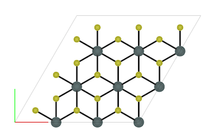
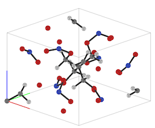
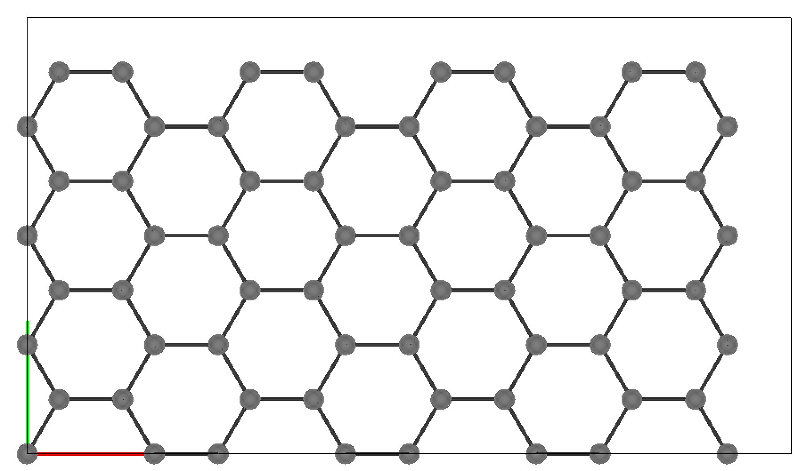
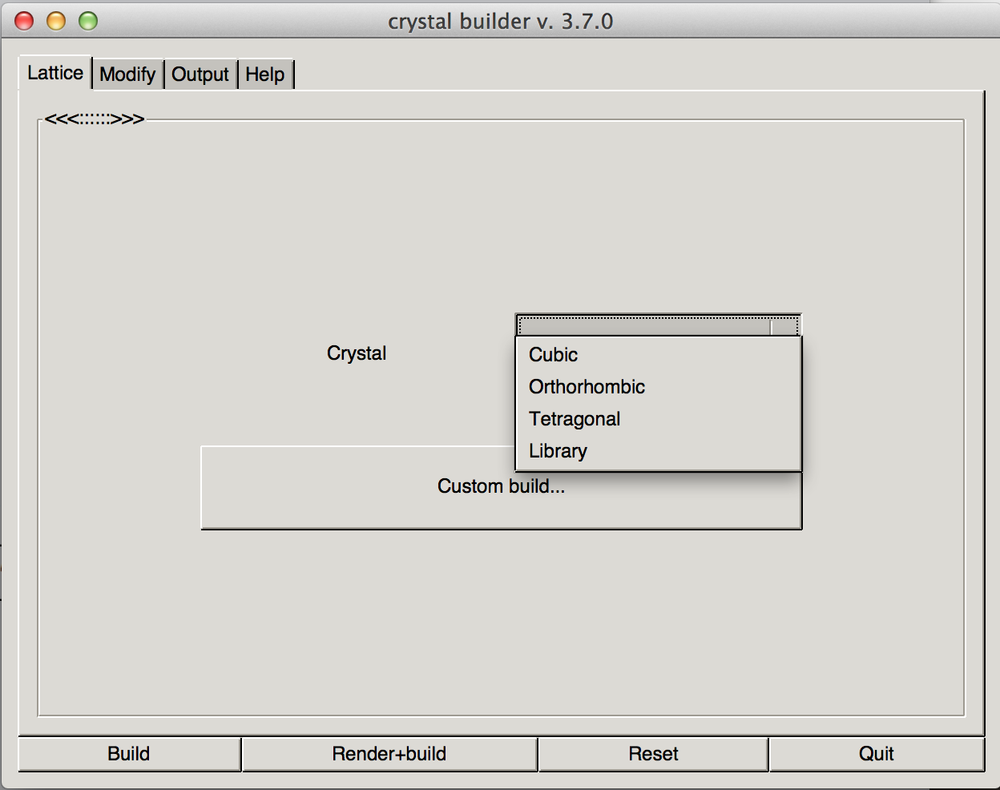
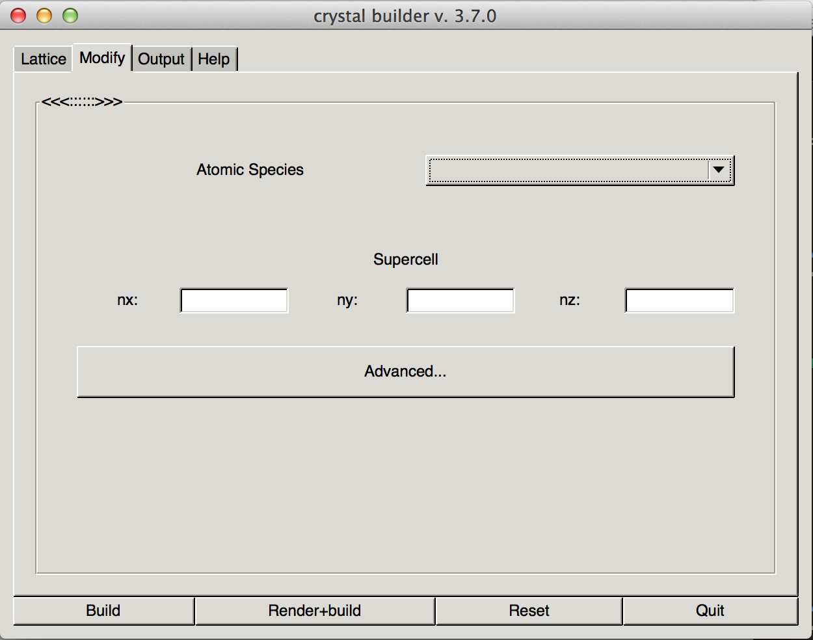
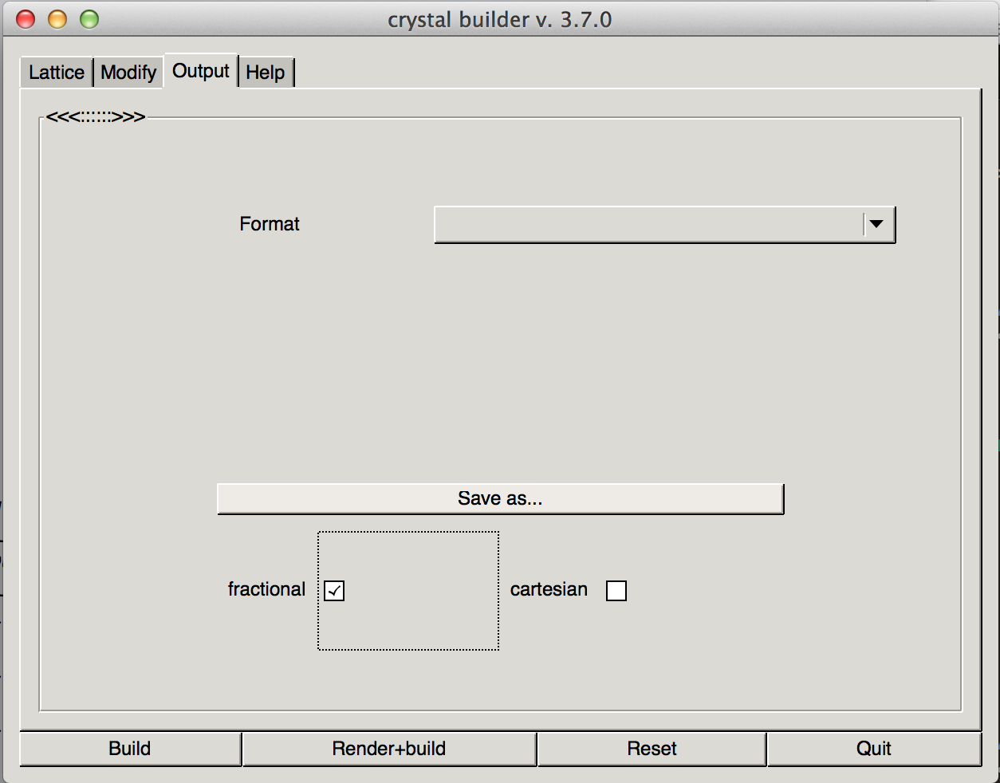

Description:
This is an utlity designed to construct a wide range of crystal structures for use in several common Density Functional Theory and Molecular Dynamics packages.
Capabilities:
Bravais lattices: Cubic, Orthorhombic, Tetragonal
Library structures:
2D materials: Graphene, h-BN, (M)etal (D)i(C)halcogenide-2H/1T (i.e. SnS2), (T)ransition (M)etal (D)i(C)halcogenide-2H/1T (i.e. MoSe2)
Energetic materials (PETN-I, TATB, β-HMX)
Define a custom lattice by specifying the lattice parameters and angles, the basis positions, and the element types
Create structures using the GUI or from the command line with a text file
Build and view large super cells (no limit on maximum atoms)
3D graphics rendering of the crystals with real time user interaction
Display as a molecule or with a periodic unit cell
Display bonds between nearest neighbors, uniform adjustable cutoff
Print output atomic coordinates as fractional or cartesian
Output to several popular Denisty Functional Theory and Molecular Dynamics packages:
Materials Studio DMol (.car)
LAMMPS (.input)
VASP 5.x.x (POSCAR)
Color and size according to atomic species. Coloring based on CPK/Jmol standard

Screenshots:
SnS2-2H
PETN
Graphene
GUI lattice
GUI modify
GUI output